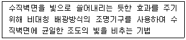
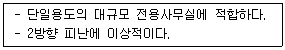
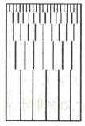
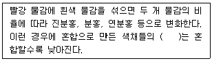
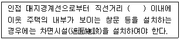
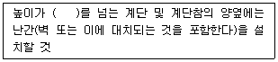
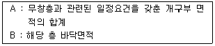
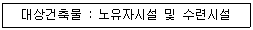

실내건축산업기사 (2018-04-28 기출문제)
1과목: 실내디자인론
1. 창과 문에 관한 설명으로 옳지 않은 것은?
- 문은 인접된 공간을 연결시킨다.
- 창과 문의 위치는 동선에 영향을 주지 않는다.
- 창은 공기와 빛을 통과시켜 통풍과 채광을 가능하게 한다.
- 창의 크기와 위치, 형태는 창에서 보이는 시야의 특성을 결정한다.
(정답률: 87%)

2. 벽부형 조명기구에 관한 설명으로 옳지 않은 것은?
- 선벽부형은 거울이나 수납장에 설치하여 보조 조명으로 사용된다.
- 조명기구를 벽체에 설치하는 것으로 브라켓(bracket)으로 통칭된다.
- 휘도조절이 가능한 조명기구나 휘도가 높은 광원을 사용하는 것이 좋다.
- 직사벽부형은 빛이 강하게 아래로 투사되어 물체가 강조되므로 디스플레이용으로 사용된다.
(정답률: 69%)
3. 질감에 관한 설명으로 옳지 않은 것은?
- 매끄러운 재료가 반사율이 높다.
- 효과적인 질감 표현을 위해서 는 색채와 조명을 동시에 고려해야 한다.
- 좁은 실내 공간을 넓게 느껴지도록 하기 위해서는 표면이 거칠고 어두운 재료를 사용하는 것이 좋다.
- 질감은 시각적 환경에서 여러 종류의 물체들을 구분하는데 도움을 줄 수 있는 중요한 특성 가운데 하나이다.
(정답률: 83%)
4. 다음 설명에 알맞은 조명의 연출기법은?

- 빔플레이
- 월워싱 기법
- 실루엣 기법
- 스파클 기법
(정답률: 80%)
5. 다음 중 도시의 랜드마크에 가장 중요시 되는 디자인 원리는?
- 점이
- 대립
- 강조
- 반복
(정답률: 85%)
6. 다음 설명에 알맞은 사무소 코어의 유형은?

- 편심코어형
- 중심코어형
- 독립코어형
- 양단코어형
(정답률: 82%)
7. 실내공간을 형성하는 기본 요소 중 바닥에 관한 설명으로 옳지 않은 것은?
- 바닥은 모든 공간의 기초가 되므로 항상 수평면이어야 한다.
- 하강된 바닥면은 내향적이며 주변의 공간에 대해 아늑한 은신처로 인식된다.
- 다른 요소들이 시대와 양식에 의한 변화가 현저한데 비해 바닥은 매우 고정적이다.
- 상승된 바닥면은 공간의 흐름이나 동선을 차단하지만 주변의 공간과는 다른 중요한 공간으로 인식된다.
(정답률: 50%)
8. 디자인 요소 중 선에 관한 다음 그림이 의미하는 것은?

- 선을 끊음으로써 점을 느낀다.
- 조밀성의 변화로 깊이를 느낀다.
- 선을 포개면 패턴을 얻을 수 있다.
- 지그재그선의 반복으로 양감의 효과를 얻는다.
(정답률: 65%)
9. 사무소 건축의 실단위 계획 중 개실시스템에 관한 설명으로 옳지 않은 것은?
- 독립성이 우수하다는 장점이 있다.
- 일반적으로 복도를 통해 각 실로 진입한다.
- 실의 길이와 깊이에 변화를 주기 용이하다.
- 프라이버시의 확보와 응접이 요구되는 최고 경영자나 전문직 개실에 사용된다.
(정답률: 76%)
10. 부엌 가구의 배치 유형 중 L자형에 관한 설명으로 옳지 않은 것은?
- 부엌과 식당을 겸할 경우 많이 활용된다.
- 두 벽면을 이용하여 작업대를 배치한 형식이다.
- 작업면이 가장 넓은 형식으로 작업 효율도 가장 좋다.
- 한 쪽 면에 싱크대를, 다른 면에 가열대를 설치하면 능률적이다.
(정답률: 61%)
11. 실내공간의 용도를 달리하여 보수(Renovation)할 경우 실내디자이너가 직접 분석해야 하는 사항과 가장 거리가 먼 것은?
- 기존건물의 기초상태
- 천장고와 내부의 상태
- 기존건물의 법적 용도
- 구조형식과 재료마감상태
(정답률: 57%)
12. 디자인 요소 중 2차원적 형태가 가지는 물리적 특성이 아닌 것은?
- 질감
- 명도
- 패턴
- 부피
(정답률: 74%)
13. 상점의 동선계획에 관한 설명으로 옳지 않은 것은?
- 종업원 동선은 가능한 짧고 간단하게 하는 것이 좋다.
- 고객 동선은 가능한 짧게 하여 고객이 상점 내에 오래 머무르지 않도록 한다.
- 고객 동선과 종업원 동선이 만나는 위치에 카운터나 쇼케이스를 배치하는 것이 좋다.
- 상품 동선은 상품의 운반·통행 등의 이동에 불편하지 않도록 충분한 공간 확보가 필요하다.
(정답률: 80%)
14. 상점 디스플레이에서 주력 상품의 진열과 관련된 골든 스페이스의 범위로 알맞은 것은?
- 300~600mm
- 650~900mm
- 850~1250mm
- 1200~1500mm
(정답률: 81%)
15. 공간의 레이아웃(lay-out)과 가장 밀접한 관계를 가지고 있는 것은?
- 단면계획
- 동선계획
- 입면계획
- 색채계획
(정답률: 80%)
16. 상점 구성의 기본이 되는 상품 계획을 시각적으로 구체화시켜 상점 이미지를 경영 전략적 차원에서 고객에게 인식시키는 표현 전략은?
- VMD
- 슈퍼그래픽
- 토큰 디스플레이
- 스테이지 디스플레이
(정답률: 74%)
17. 유닛 가구(unit furniture)에 관한 설명으로 옳지 않은 것은?
- 고정적이면서 이동적인 성격을 갖는다.
- 필요에 따라 가구의 형태를 변화시킬 수 있다.
- 규격화된 단일가구를 원하는 형태로 조합하여 사용할 수 있다.
- 특정한 사용목적이나 많은 물품을 수납하기 위해 건축화된 가구이다.
(정답률: 61%)
18. 다음의 아파트 평면형식 중 프라이버시가 가장 양호한 것은?
- 홀형
- 집중형
- 편복도형
- 중복도형
(정답률: 59%)
19. 주택의 현관에 관한 설명으로 옳지 않은 것은?
- 거실의 일부를 현관으로 만들지 않는 것이 좋다.
- 현관에서 정면으로 화장실 문이 보이지 않도록 하는 것이 좋다.
- 현관 홀의 내부에는 외기, 바람 등의 차단을 위해 방풍문을 설치할 필요가 있다.
- 연면적 50m2 이하의 소규모 주택에서는 연면적의 10% 정도를 현관 면적으로 계획하는 것이 일반적이다.
(정답률: 68%)
20. 등받이와 팔걸이 부분은 없지만 기댈 수 있을 정도로 큰 소파의 명칭은?
- 세티
- 다이밴
- 체스터필드
- 턱시도 소파
(정답률: 44%)
2과목: 색채 및 인간공학
21. 인체 계측 데이터의 적용 시 최소치 설계 기준이 필요한 항목은?
- 의자의 폭
- 비상구의 높이
- 선반의 높이
- 그네의 지지하중
(정답률: 68%)
22. 인간공학이 추구하는 목적을 가장 잘 설명한 것은?
- 인간요소를 연구하여 환경요소에 통합하려는 것이다.
- 작업, 직무, 기계설 비, 방법, 기구, 환경 등을 개선하여 인간을 환경에 적응시키기 위한 것이다.
- 인간이 좀 더 편리하고 쉽게 살아갈 수 있도록 환경 요소에 대한 특정을 찾아내고자 하는 것이다.
- 인간과 그 대상이 되는 환경요소에 관련된 학문을 연구하여 인간과의 적합성을 연구해 나가는 것이다.
(정답률: 48%)
23. 인간의 가청 주파수 범위로 가장 적절한 것은?
- 10~10000Hz
- 20~20000Hz
- 30~30000Hz
- 40~40000Hz
(정답률: 71%)
24. 제어장치(control)의 인간공학적 설계 고려사항 중 틀린 것은?
- 사용할 때 심리적, 역학적 능률을 고려할 것
- 제어장치 움직임과 위치, 제어대상이 서로 맞을 것
- 제어장치의 운동과 표시장치의 표시가 같은 방향일 것
- 가장 자주 사용하는 제어장치는 어깨전방의 상단에 설치할 것
(정답률: 61%)
25. 시간적 변화를 필요로 하는 경우와 연속과정의 제어에 적합한 시각표시 장치의 설계 형태는?
- 지침이동형
- 계수형
- 지침고정형
- 계산기형
(정답률: 56%)
26. 수작업을 위한 인공조명 중 가장 효율이 높은 방법은?
- 간접조명
- 확산조명
- 직접조명
- 투과조명
(정답률: 66%)
27. 호흡계에 관한 설명으로 틀린 것은?
- 인두(pharynx)는 호흡기계와 소화기계에 공통으로 관여하는 근육성 관이다.
- 호흡계의 기관(trachea)은 기능에 따라 전도영역과 호흡영역으로 구분된다.
- 비강(nasal cavity)은 코 속의 원통공간으로 공기를 여과하고 따뜻하게 하는 기능을 가진다.
- 호흡기는 상기도와 하기도로 구성되어 있으며 이 중 상기도는 코, 비강, 후두로 하기도는 인두, 기관, 기관지, 폐로 구성되어 있다.
(정답률: 50%)
28. 신체 진동의 영향을 가장 많이 받는 것은?
- 시력(視力)
- 미각(味覺)
- 청력(聽力)
- 근력(筋力)
(정답률: 55%)
29. 시지각과정에서의 게스탈트 법칙을 설명한 것으로 틀린 것은?
- 최대 질서의 법칙으로서 분절된 게스탈트마다 어떤 질서를 가지는 것을 의미한다.
- 다양한 내용에서 각자 다른 원리를 표현하고자 하는 것의 이론화 작업이다.
- 지각에 있어서의 분리를 규정하는 요인으로 공통분모가 되는 것을 끄집어내는 일의 법칙이다.
- 구조를 가지고 있기 때문에 에너지가 있고, 운동과 적절한 긴장이 내포되어 역동적, 역학적이다.
(정답률: 40%)
30. 한 감각을 대상으로 두 가지 이상의 신호가 동시에 제시되었을 때 같고 다름을 비교·판단하는 것과 관련이 깊은 용어는?
- 시배분
- 상대식별
- 경로용량
- 절대식별
(정답률: 73%)
31. 다음 중 ( )에 들어갈 말로 옳은 것은?

- 명도
- 채도
- 밀도
- 명시도
(정답률: 68%)
32. 먼셀 색체계의 설명으로 옳은 것은?
- 먼셀 색상환의 중심색은 빨강(R), 노랑(Y), 녹색(G), 파랑(B), 자주(P)이다.
- 먼셀의 명도는 1~10까지 모두 10단계로 되어 있다.
- 먼셀의 채도는 처음의 회색을 1로 하고 점차 높아지도록 하였다.
- 각각의 색상은 채도 단계가 다르게 만들어지는데 빨강은 14개, 녹색과 청록은 8개이다.
(정답률: 44%)
33. 나뭇잎이 녹색으로 보이는 이유를 색채 지각적 원리로 옳게 설명한 것은?
- 녹색의 빛은 투과하고 그 밖의 빛은 흡수하기 때문이다.
- 녹색의 빛은 산란하고 그 밖의 빛은 반사하기 때문이다.
- 녹색의 빛은 반사하고 그 밖의 빛은 흡수하기 때문이다.
- 녹색의 빛은 흡수하고 그 밖의 빛은 반사하기 때문이다.
(정답률: 65%)
34. 먼셀 색체계의 기본 5색상이 아닌 것은?
- 빨강
- 보라
- 녹색
- 자주
(정답률: 63%)
35. 다음 중 색채의 감정적 효과로서 가장 흥분을 유발시키는 색은?
- 한색계의 높은 채도
- 난색계의 높은 채도
- 난색계의 낮은 명도
- 한색계의 높은 명도
(정답률: 74%)
36. 조명이나 색을 보는 객관적 조건이 달라져도 주관적으로는 물체색이 달라져 보이지 않는 특성을 가리키는 것은?
- 동화 현상
- 푸르킨예 현상
- 색채 항상성
- 연색성
(정답률: 61%)
37. 다음 중 유사색상 배색의 특징은?
- 동적이다.
- 자극적인 효과를 준다.
- 부드럽고 온화하다.
- 대비가 강하다.
(정답률: 74%)
38. 문·스펜서(P.Moon and D.E. Spencer)의 색채조화론 중 거리가 먼 것은?
- 동일의 조화(identity)
- 유사의 조화(similarity)
- 대비의 조화(contrast)
- 통일의 조화(unity)
(정답률: 59%)
39. 다음 중 부엌을 칠 할 때 요리대 앞면의 벽색으로 가장 적합한 것은?
- 명도 2 정도, 채도 9
- 명도 4 정도, 채도 7
- 명도 6 정도, 채도 5
- 명도 8 정도, 채도 2 이하
(정답률: 55%)
40. 디지털색채시스템에서 CMYK 형식에 대한 설명으로 옳은 것은?
- CMYK 4가지 컬러를 혼합하면 검정이 된다.
- 가법혼합방식에 기초한 원리를 사용한다.
- RGB 형식에서 CMYK 형식으로 변환되었을 경우 컬러가 더욱 선명해 보인다.
- 표현할 수 있는 컬러의 범위가 RGB 형식보다 넓다.
(정답률: 62%)
3과목: 건축재료
41. 페어 글라스라고도 불리우며 단열성, 차음성이 좋고 결로방지에 효과적인 유리는?
- 복층유리
- 강화유리
- 자외선차단유리
- 망입유리
(정답률: 73%)
42. 목재의 구성요소 중 세포 내의 세포내강이나 세포간극과 같은 빈 공간에 목재조직과 결합되지 않은 상태로 존재하는 수분을 무엇이라 하는가?
- 세포수
- 혼합수
- 결합수
- 자유수
(정답률: 70%)
43. 목재의 방부제가 갖추어`야 할 성질로 옳지 않은 것은?
- 균류에 대한 저항성이 클 것
- 화학적으로 안정할 것
- 휘발성이 있을 것
- 침투성이 클 것
(정답률: 78%)
44. 아스팔트 방수재료로서 천연 아스팔트가 아닌 것은?
- 아스팔타이트(asphaltite)
- 로크 아스팔트(rock asphalt)
- 레이크 아스팔트(lake asphalt)
- 블론 아스팔트(blown asphalt)
(정답률: 63%)
45. 타일에 관한 설명으로 옳지 않은 것은?
- 일반적으로 모자이크타일 및 내장타일은 건식법, 외장타일은 습식법에 의해 제조된다.
- 바닥타일, 외부타일로는 주로 도기질 타일이 사용된다.
- 내부벽용 타일은 흡수성과 마모저항성이 조금 떨어지더라도 미려하고 위생적인 것을 선택한다.
- 타일은 일반적으로 내화적이며, 형상과 색조의 표현이 자유로운 특성이 있다.
(정답률: 56%)
46. 멜라민수지에 관한 설명으로 옳지 않은 것은?
- 열가소성 수지이다.
- 내수성, 내약품성, 내용제성이 좋다.
- 무색투명하며 착색이 자유롭다.
- 내열성과 전기적 성질이 요소수지보다 우수하다.
(정답률: 51%)
47. 인조석바름 재료에 관한 설명으로 옳지 않은 것은?
- 주재료는 시멘트, 종석, 돌가루, 안료 등이다.
- 돌가루는 부배합의 시멘트가 건조수축할 때 생기는 균열을 방지하기 위해 혼입한다.
- 안료는 물에 녹지 않고 내알칼리성이 있는 것을 사용한다.
- 종석의 알의 크기는 2.5mm 체에 100% 통과하는 것으로 한다.
(정답률: 54%)
48. 침엽수에 관한 설명으로 옳지 않은 것은?
- 수고가 높으며 통직형이 많다.
- 비교적 경량이며 가공이 용이하다.
- 건조가 어려우며 결함발생 확률이 높다.
- 병충해에 약한 편이다.
(정답률: 48%)
49. 용융하기 쉽고, 산에는 강하나 알칼리에 약한 특성이 있으며 건축 일반용 창호유리, 병유리에 자주 사용되는 유리는?
- 소다석회 유리
- 칼륨석회 유리
- 보헤미아유리
- 납유리
(정답률: 73%)
50. 강도, 경도, 비중이 크며 내화적이고 석질이 극히 치밀하여 구조용 석재 또는 장식재로 널리 쓰이는 것은?
- 화강암
- 응회암
- 캐스트스톤
- 안산암
(정답률: 48%)
51. 철골 부재간 접합방식 중 마찰접합 또는 인장접합 등을 이용한 것은?
- 메탈터치
- 컬럼쇼트닝
- 필릿용접접합
- 고력볼트접합
(정답률: 64%)
52. 재료의 일반적 성질 중 재료에 외력을 제거하여도 재료가 원상으로 돌아가지 않고 변형된 그대로의 상태로 남아 있는 성질을 무엇이라고 하는가?
- 탄성
- 소성
- 점성
- 인성
(정답률: 63%)
53. 시멘트의 조성 화합물 중 수화작용이 가장 빠르며 수화열이 가장 높고 경화과정에서 수축률도 높은 것은?
- 규산 3석회
- 규산 2석회
- 알루민산 3석회
- 알루민산 철 4석회
(정답률: 57%)
54. 도료의 전색제 중 천연수지로 볼 수 없는 것은?
- 로진(Rosin)
- 댐머(Dammer)
- 멜라민(Melamine)
- 셸락(Shellac)
(정답률: 67%)
55. 경질섬유판의 성질에 관한 설명으로 옳지 않은 것은?
- 가로·세로의 신축이 거의 같으므로 비틀림이 적다.
- 표면이 평활하고 비중이 0.5 이하이며 경도가 작다.
- 구멍뚫기, 본뜨기, 구부림 등의 2차 가공이 가능하다.
- 펄프를 접착제로 제판하여 양면을 열압건조 시킨 것이다.
(정답률: 51%)
56. 점토제품 중에서 흡수성이 가장 큰 것은?
- 토기
- 도기
- 석기
- 자기
(정답률: 66%)
57. 알루미늄의 성질에 관한 설명으로 옳지 않은 것은?
- 융점이 낮기 때문에 용해주조도는 좋으나 내화성이 부족하다.
- 열·전기 전도성이 크고 반사율이 높다.
- 알칼리나 해수에는 부식이 쉽게 일어나지 않지만 대기 중에서는 쉽게 침식된다.
- 비중이 철의 1/3 정도로 경량이다.
(정답률: 75%)
58. 시멘트를 저장할 때의 주의사항으로 옳지 않은 것은?
- 장기간 저장 시에는 7포 이상 쌓지 않는다.
- 통풍이 원활하도록 한다.
- 저장소는 방습처리에 유의한다.
- 3개월 이상 된 것은 재시험하여 사용한다.
(정답률: 64%)
59. 다음 중 시멘트의 안정성 측정 시험법은?
- 오토클레이브 팽창도 시험
- 브레인법
- 표준체법
- 슬럼프 시험
(정답률: 49%)
60. 목재 건조의 목적이 아닌 것은?
- 부재 중량의 경감
- 강도 및 내구성 증진
- 부패방지 및 충해 예방
- 가공성 증진
(정답률: 56%)
4과목: 건축일반
61. 내력벽 벽돌쌓기에 있어서 영식쌓기가 활용되는 가장 큰 이유는?
- 토막벽돌을 이용할 수 있어 경제적이기 때문에
- 시공의 용이함으로 공사진행이 빠르기 때문에
- 통줄눈이 생기지 않아 구조적으로 유리하기 때문에
- 일반적으로 외관이 뛰어나기 때문에
(정답률: 57%)
62. 다음은 건축법령에 따른 차면시설 설치에 관한 조항이다. ( )안에 들어갈 내용으로 옳은 것은?

- 1.5m
- 2m
- 3m
- 4m
(정답률: 63%)
63. 철골조에서 스티프너를 사용하는 이유로 가장 적당한 것은?
- 콘크리트와의 일체성 확보
- 웨브 플레이트의 좌굴방지
- 하부 플랜지의 단면계수 보강
- 상부 플랜지의 단면계수 보강
(정답률: 66%)
64. 다음 소방시설 중 소화설비에 해당되지 않는 것은?
- 연결살수설비
- 스프링클러설비
- 옥외소화전설비
- 소화기구
(정답률: 60%)
65. 비상경보설비를 설치하여 야 하는 특정소방 대상물의 기준으로 옳지 않은 것은?
- 연면적 400m2(지하가 중 터널 또는 사람이 거주하지 않거나 벽이 없는 축사 등 동·식물 관련시설은 제외한다) 이상인 것
- 지하가 중 터널로서 길이가 500m 이상인 것
- 50명 이상의 근로자가 작업하는 옥내 작업장
- 지하층 또는 무창층의 바닥면적이 400m2(공연장의 경우 200m2) 이상인 것
(정답률: 33%)
66. 특별피난계단 및 비상용승강기의 승강장에 설치하는 배연설비의 구조에 관한 기준으로 옳지 않은 것은?
- 배연구 및 배연풍도는 불연재료로 하고, 화재가 발생한 경우 원활하게 배연시킬 수 있는 규모로서 외기 또는 평상시에 사용하지 아니하는 굴뚝에 연결할 것
- 배연구에 설치하는 수동개방장치 또는 자동개방장치(열감지기 또는 연기감지기에 의한 것을 말한다)는 손으로도 열고 닫을 수 없도록 할 것
- 배연구는 평상시에는 닫힌 상태를 유지하고, 연 경우에는 배연에 의한 기류로 인하여 닫히지 아니하도록 할 것
- 배연구가 외기에 접하지 아니하는 경우에는 배연기를 설치할 것
(정답률: 65%)
67. 다음은 건축물의 피난·방화구조 등의 기준에 관한 규칙에 따른 계단의 설치기준이다. ( ) 안에 들어갈 내용으로 옳은 것은?

- 1m
- 1.2m
- 1.5m
- 2m
(정답률: 45%)
68. 오피스텔과 공동주택의 난방설비를 개별난방방식으로 하는 경우의 기준으로 옳지 않은 것은?
- 보일러는 거실 외의 곳에 설치하고 보일러를 설치하는 곳과 거실 사이의 경계벽은 출입구를 포함하여 불연재료로 마감한다.
- 보일러실의 윗부분에는 0.5m2 이상의 환기창을 설치한다.
- 오피스텔의 경우에는 난방구획을 방화구획으로 구획한다.
- 기름보일러를 설치하는 경우에는 기름저장소를 보일러실 외의 다른 곳에 설치한다.
(정답률: 46%)
69. 서양 건축양식을 시대순에 따라 옳게 나열한 것은?
- 비잔틴 - 로코코 - 로마 - 르네상스
- 바로크 - 로마 - 이집트 - 비잔틴
- 이집트 - 바로크 - 로마 - 르네상스
- 이집트 - 로마 - 비잔틴 - 바로크
(정답률: 51%)
70. 다음 중 방염 대상물품에 해당되지 않는 것은?
- 암막
- 무대용 합판
- 종이벽지
- 창문에 설치하는 커튼류
(정답률: 72%)
71. 제연설비를 설치해야 할 특정소방대상물이 아닌 것은?
- 특정소방대상물(갓복도형 아파트 등은 제외한다)에 부설된 특별피난계단 또는 비상용승강기의 승강장
- 지하가(터널은 제외한다)로서 연면적이 500m2인 것
- 문화 및 집회시설로서 무대부의 바닥면적이 300m2인 것
- 지하가 중 예상 교통량, 경사도 등 터널의 특성을 고려하여 행정안전부령으로 정하는 터널
(정답률: 35%)
72. 소방시설법령에서 정의한 무창층에 해당하는 기준으로 옳은 것은?

- A/B ≤ 1/10
- A/B ≤ 1/20
- A/B ≤ 1/30
- A/B ≤ 1/40
(정답률: 64%)
73. 굴뚝 또는 사일로 등 평면형상이 일정하고 구조물에 가장 적합한 거푸집은?
- 유로 폼
- 워플 폼
- 터널 폼
- 슬라이딩 폼
(정답률: 49%)
74. 벽이나 바닥, 지붕 등 건축물의 특정부위에 단열이 연속되지 않은 부분이 있어 이 부위를 통한 열의 이동이 많아지는 현상을 무엇이라 하는가?
- 결로현상
- 열획득현상
- 대류현상
- 열교현상
(정답률: 49%)
75. 다음 중 광속의 단위로 옳은 것은?
- cd
- lx
- lm
- cd/m2
(정답률: 38%)
76. 스프링클러설비를 설치하여야 하는 특정소방대상물에 대한 기준으로 옳은 것은?
- 창고시설(물류터미널은 제외한다)로서 바닥면적 합계가 3000m2 이상인 경우에는 모든 층
- 판매시설, 운수시설 및 창고시설(물류터미널에 한정한다)로서 바닥면적의 합계가 3000m2 이상이거나 수용인원이 300명 이상인 경우에는 모든 층
- 숙박이 가능한 수련시설로서 해당용도로 사용되는 바닥면적의 합계가 600m2 이상인 경우 모든 층
- 종교시설(주요구조부가 목조인 것은 제외)의 경우 수용인원이 50명 이상인 경우 모든 층
(정답률: 40%)
77. 한국 전통건축 관련 용어에 관한 설명으로 옳지 않은 것은?
- 평방 - 기둥 상부의 창방 위에 놓아 다포계 건물의 주간포작을 설치하기 용이하도록 하기 위한 직사각형 단면의 부재이다.
- 연등천장 - 따로 반자를 설치하지 않고 서까래를 그대로 노출시킨 천장이며, 구조미를 나타낸다.
- 귀솟음 - 기둥머리를 건물 안쪽으로 약간씩 기울여 주는 것을 말하며, 오금법이라고도 한다.
- 활주 - 추녀 밑을 받치고 있는 기둥을 말한다.
(정답률: 51%)
78. 건축물에 설치하는 방화벽의 구조에 관한 기준으로 옳지 않은 것은?
- 방화벽에 설치하는 출입문의 너비 및 높이는 각각 2.5m 이하로 한다.
- 방화벽에 설치하는 출입문은 갑종방화문 또는 을종방화문으로 한다.
- 내화구조로서 홀로 설 수 있는 구조로 한다.
- 방화벽의 양쪽 끝과 윗쪽 끝을 건축물의 외벽면 및 지붕면으로부터 0.5m 이상 튀어나오게 한다.
(정답률: 50%)
79. 상업지역 및 주거지역에서 건축물에 설치하는 냉방시설 및 환기시설의 배기구는 도로면으로부터 최소 얼마 이상의 높이에 설치하여야 하는가?
- 1m
- 2m
- 3m
- 4m
(정답률: 49%)
80. 건축허가 등을 함에 있어서 미리 소방본부장 또는 소방서장의 동의를 받아야 하는 다음 대상 건축물의 최소 연면적 기준은?

- 200m2 이상
- 300m2 이상
- 400m2 이상
- 500m2 이상
(정답률: 45%)